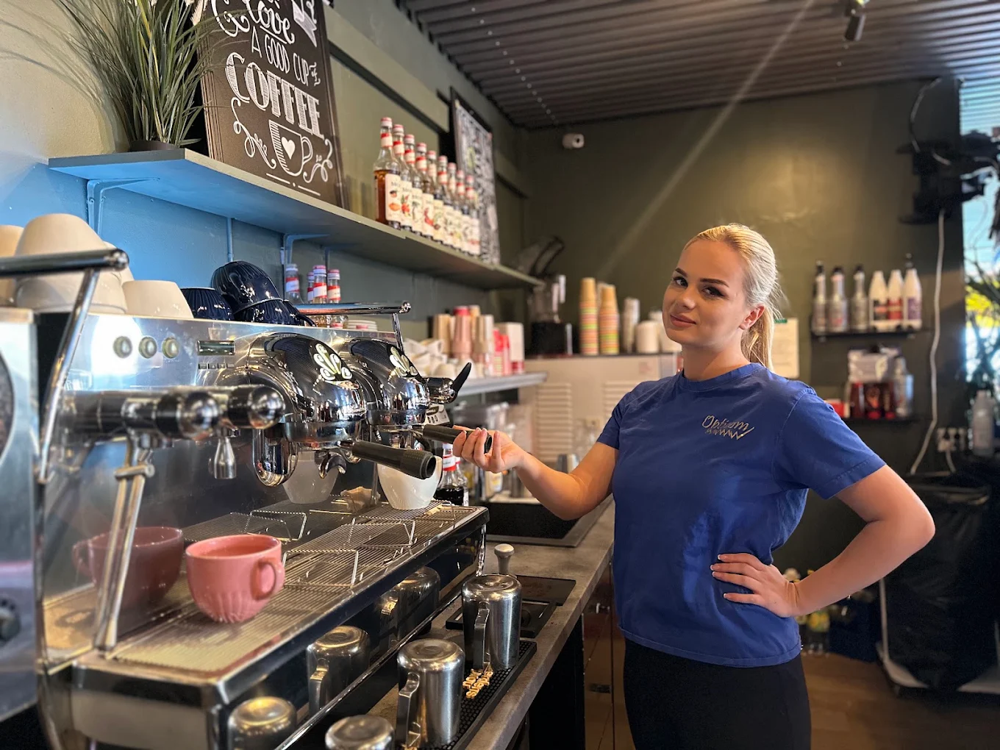
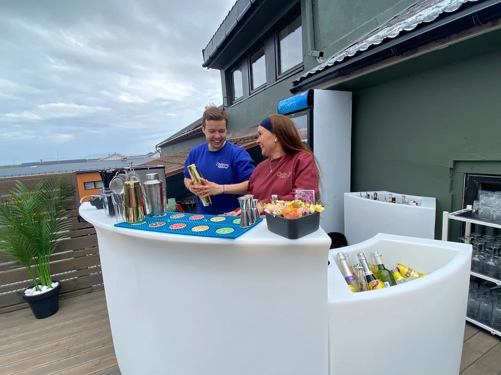
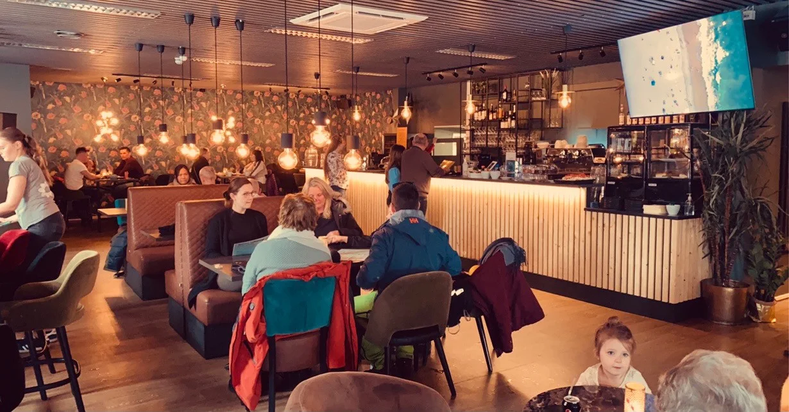

Restaurant
Italiensk pizza & Boden-pizza
18 pizzavarianter og vår populære Boden-pizza, pluss lunsj-, middags- og kveldsmeny.
Vadsø · Siden 1996
Italiensk pizza, lunsj og kaffebar midt i hjertet av Vadsø — og Finnmarks første takterrasse, med utsikt over Varangerfjorden.
Hos oss
Fra lunsj og kaffekopp på formiddagen til pizza på kvelden og lørdagskafé med hjemmelagde kaker — Opticom er et naturlig møtested i Vadsø.
Restaurant
18 pizzavarianter og vår populære Boden-pizza, pluss lunsj-, middags- og kveldsmeny.

Kaffebar
Nyt hjemmelagde kaker og et stort utvalg kaffe, iste og milkshakes — perfekt for en hyggelig stund med venner.

Takterrasse
Siden sommeren 2023: nyt lunsj eller middag med fantastisk utsikt over Varangerfjorden.

Selskap & nattklubb
Arranger lukkede selskaper i andre etasje med storskjerm og shuffleboard. I helgene blir Opticom nattklubb med alle rettigheter.
Meny
18 pizzavarianter, alle i stor størrelse — eller sett sammen din egen. Se hele menyen, inkludert lunsj-, middags- og kveldsmeny, på egen side.
Tomatsaus, mais, paprika, purre, pepperoni, kjøttdeig, toppes med kinakål og dressing.
Hvit saus, mais, ananas, bacon, kylling, toppes med ruccola og hvitløksdressing.
Chilisaus, purreløk, paprika, sopp, skinke, bacon og biff.
Tomatsaus, fersk hvitløk, fetaost, spinat, purreløk, sopp, paprika, tomat, mais og ananas.
Tomatsaus, fersk hvitløk, spinat, rødløk, fetaost og marinert kylling.
Tomatsaus, mais, paprika, løk, biff, toppes med bearnaisesaus.
Chilisaus, tacokjøtt, mais, løk, paprika, nacho og ost.
Chilisaus, jalapeno, mais, rødløk, kebabkjøtt, toppes med kebabdressing.
Du velger selv hva du ønsker å ha på pizzaen — eller la kokken overraske deg.
Om oss
Opticom åpnet dørene i 1996 som en pizzapub og har siden utviklet seg til en koselig lunsjplass og kaffebar midt i hjertet av Vadsø. Vi tilbyr et variert utvalg av lunsjretter, middager, kveldsmeny, italiensk pizza og selvfølgelig vår populære Boden-pizza.
På ettermiddag- og kveldstid er Opticom et samlingspunkt for både lokalbefolkningen og besøkende i Vadsø og Varanger. I vår andre etasje kan du arrangere lukkede selskaper med storskjerm og shuffleboard, og i helgene forvandles Opticom til en livlig nattklubb med alle rettigheter.
Sommeren 2023 åpnet vi Finnmarks første takterrasse, hvor du kan nyte en deilig lunsj eller middag med fantastisk utsikt over Varangerfjorden. Velkommen til Opticom — et naturlig møtested for gode opplevelser!